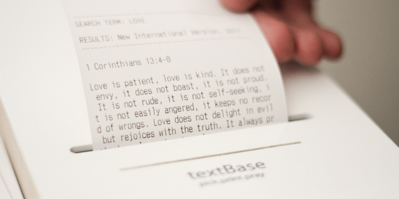

TextBase is a database that produces scripture from the Bible depending on how you interact with it. TextBase adopts texting as its platform for interacting with the product, one that most people are familiar with. It introduces a new way of engaging with the word of God in a playful yet meaningful manner. When the user texts the product a key word or theme, textBase connects to an online bible database which will produce a piece of scripture based on that chosen word. The product then prints this out on a small piece of paper.